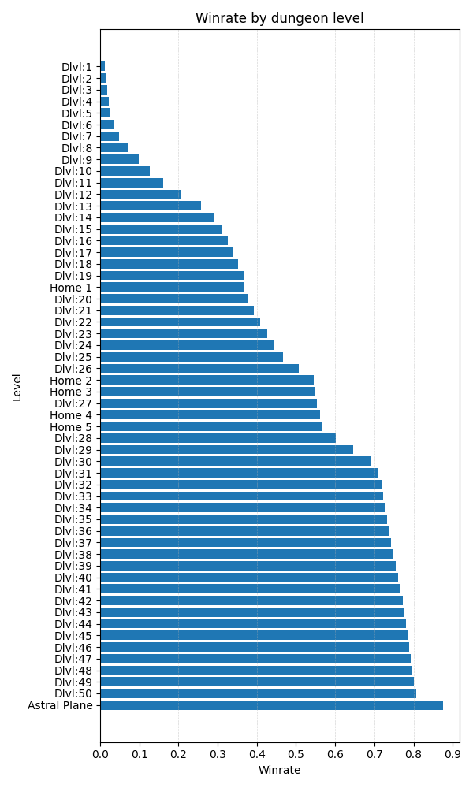
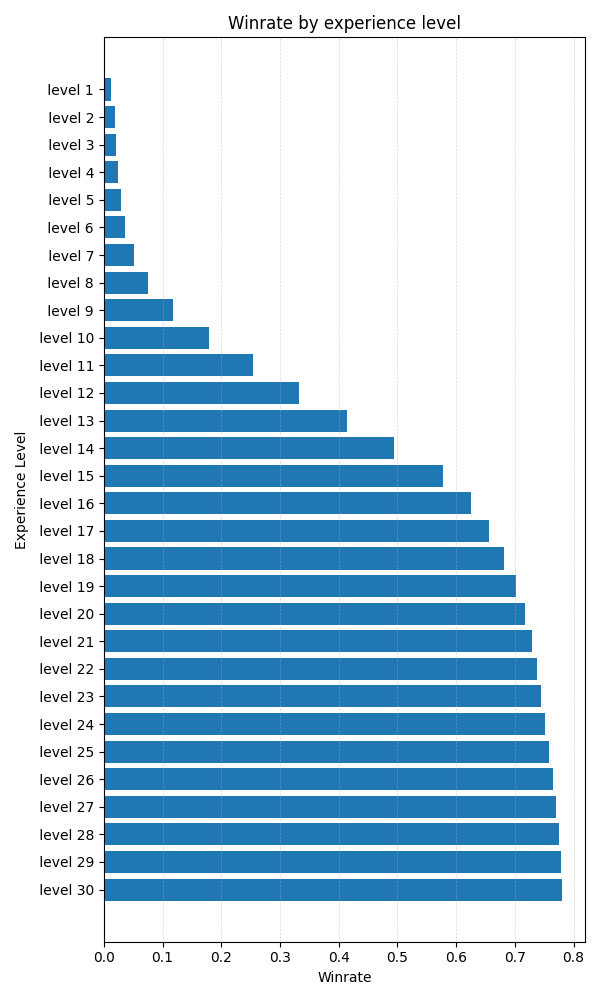

NetHack Learning Environment
The NetHack Learning Environment (NLE) is a scalable, procedurally generated, stochastic, rich, and challenging environment designed to drive long-term research in RL on problems such as exploration, planning, skill acquisition, and language-conditioned RL. Built around the classic and highly complex terminal roguelike game NetHack, NLE provides a complex and dynamic environment where agents must navigate through procedurally generated dungeons, interact with hundreds of entity types, and learn to overcome various challenges.
The goal of the player is to descend through procedurally generated dungeon levels while killing monsters, solving puzzles, and gathering better equipment in order to retrieve the Amulet of Yendor and finally ascend back to the surface to win the game. NetHack is notoriously challenging, even for human players. Mastering the game can take years even with online resources like the NetHack Wiki. Success in NetHack demands long-term strategic planning, as a winning game can involve hundreds of thousands of steps, as well as short-term tactics to fight hordes of monsters. Accurate credit assignment is also crucial to understanding which actions contributed to success or failure. NetHack has already been used extensively as a testbed for RL agents; tabula-rasa RL agents particularly struggle due to sparse reward, complex credit assignment, extremely long-time-horizon, and high stochasticity of the game. The current state-of-the-art agent still remains a hand-coded symbolic policy.
NetHack Language Wrapper
The NetHack Language Wrapper is a tool designed to
interface with the NLE and MiniHack by translating non-language
observations into text-based representations. This wrapper, converts
various NLE observations such as glyphs, blstats, tty_chars,
inv_letters, inv_strs, and tty_cursor into readable text
equivalents. For example, it transforms the visual display of the game
environment into a textual description, including details about the
surroundings, inventory, and player statistics. The wrapper also
supports text-based actions, allowing users to interact with the
environment using commands like wait, apply, and north, which are
then converted into the discrete actions required by the NLE. This
functionality enables easier interaction with the NetHack environment,
particularly for language models.


New NetHack Progression System
NetHack features an in-game scoring system that rewards players for actions such as killing monsters, identifying objects, eating food, collecting gold and items, and ultimately ascending in the game. However, we argue that this scoring system does not effectively capture true game progression, as players can win the game with scores ranging from a few hundred thousand to several million points. To address this limitation, we developed a novel, data-informed progression metric using a dataset of human-played NetHack games. Specifically, we recorded the dungeon levels and experience levels achieved in each game, as well as whether the game resulted in an ascension. Utilizing these statistics, we constructed a data-centric progression system where each data point represents the probability of a human player winning the game after reaching a specific dungeon level or experience level. The resulting progression curves are presented in Figure [NLE_progression]{reference-type=”ref” reference=”NLE_progression”}. For practical purposes, we define Dungeon Level 1 (Dlvl:1) and Experience Level 1 as representing 0% progression, corresponding to the game’s starting point, and ascension as 100% progression. The agent’s overall progress is thus determined by the highest progression achieved between the dungeon level and experience level attained.
NetHack Results
Standard errors are computed using 5 seeds. o1-preview achieves the highest progression out of all the tested models. However, it is still very far from making any significant progression in the game. The best individual run was achieved by Gemini-1.5-Pro vision-language mode, reaching dungeon level 3 and experience level 4.
LLM results
Model |
Average Progress (%) |
|---|---|
o1-preview |
1.57 ± 0.40 |
gpt-4o |
0.37 ± 0.37 |
o1-mini |
0.36 ± 0.24 |
llama-3.1-70B-it |
0.35 ± 0.35 |
gemini-1.5-pro |
0.31 ± 0.31 |
gpt-4o-mini |
0 ± 0 |
gemini-1.5-flash |
0 ± 0 |
llama-3.2-90B-it |
0 ± 0 |
llama-3.2-11B-it |
0 ± 0 |
VLM results
Model |
Average Progress (%) |
|---|---|
gemini-1.5-pro |
0.48 ± 0.48 |
gpt-4o |
0.37 ± 0.37 |
gpt-4o-mini |
0 ± 0 |
gemini-1.5-flash |
0 ± 0 |
llama-3.2-11B-it |
0 ± 0 |
gemini-1.5-flash |
0 ± 0 |
llama-3.2-90B-it |
0 ± 0 |
llama-3.2-11B-it |
0 ± 0 |
Observation
TODO